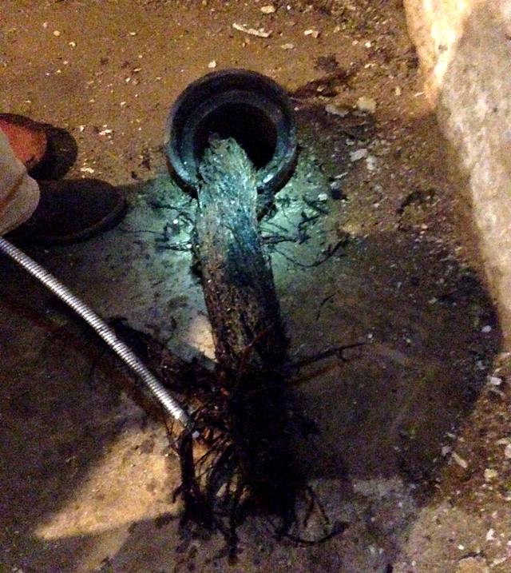
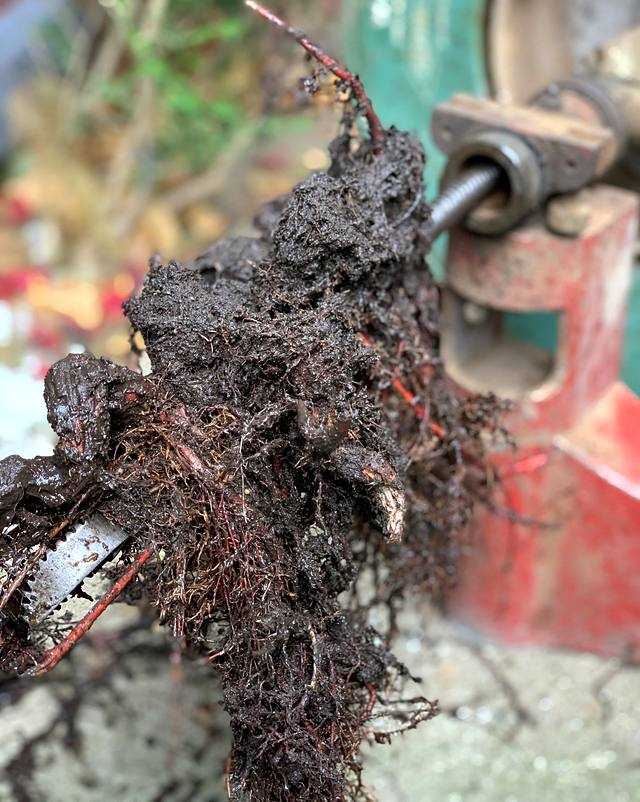
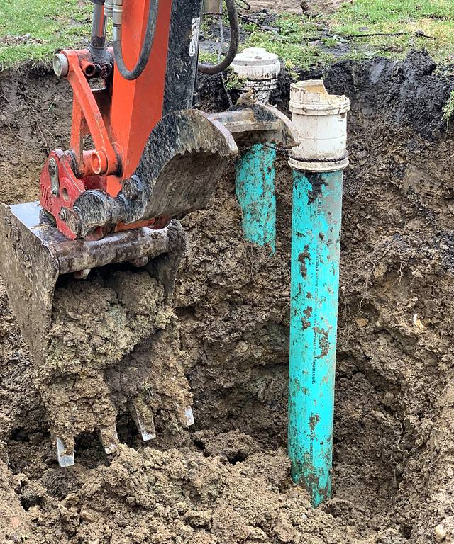
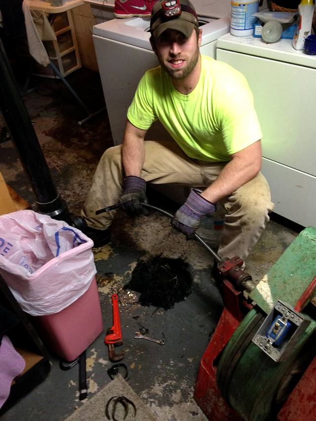
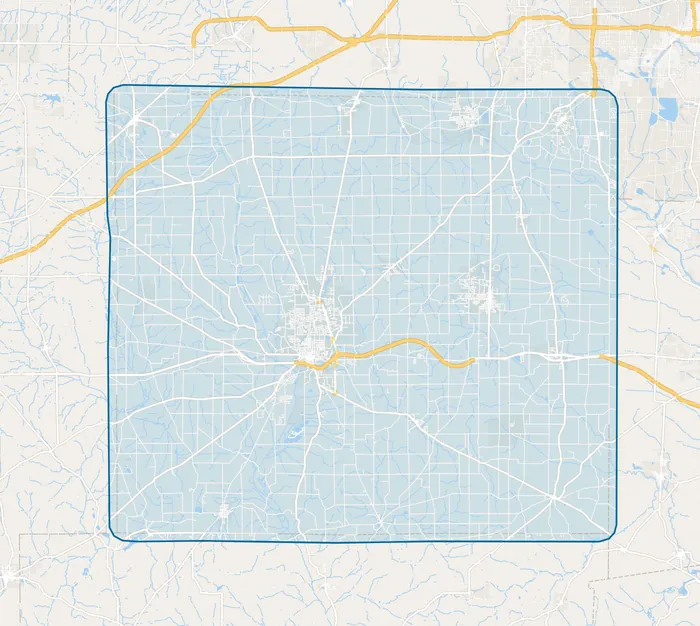

Drain & sewer cleaning · Wooster, Ohio
When drains get clogged, don’t get robbed.
Clogged sinks, backed-up basements, roots in the sewer line and septic lines, cleared across Wooster and Wayne County by a local, owner-run company.
- 4.9 from 99 Google reviews (opens in a new tab)
- Wooster Drain Cleaning, LLC since 2017
- All of Wayne County
Services
From the kitchen sink to the septic tank
Every drain in the house runs into one line, and that line runs out to the sewer or a septic tank. Here’s what can go wrong along the way, and how it gets fixed.
-
Clogged drains
Kitchen grease, hair, soap and whatever else went down the drain. Cleared out so the water runs again.
- Kitchen drains
- Bathroom sinks
- Toilets
- Basement drains and pipes
Where it happens: spot 1 on the drawing. -
Sewer lines & roots
When every drain in the house backs up at once, the problem is usually the main line. Tree roots are a common cause, and they can be cut out.
- Main sewer line clogs
- Tree roots cut out of the line
- Basement floor drain backups
- Finding where the problem is
Where it happens: spot 2 on the drawing. -
Hydro-jetting
A high-pressure water jet scrubs the inside of the pipe, washing out grease, sludge and root fibers that a cable can leave behind.
- Grease and sludge buildup
- Leftover root fibers
- Lines that clog again and again
- Main and branch lines (to be confirmed)
Where it happens: spot 3 on the drawing. -
Septic lines
Plenty of homes around Wayne County run to a septic tank instead of a city sewer. When the line between the house and the tank clogs, the whole house backs up.
- Clogs between the house and the tank
- Roots in septic lines
- Slow drains on septic systems
- Septic tank pumping (ask; to be confirmed)
Where it happens: spot 4 on the drawing.
From the job
What comes out of a clogged line
No stock photos. These are Wooster Drain Cleaning’s own pictures, from basements and yards around Wayne County.



How it works
One call to a clear drain
No call centers and no runaround. (Details to be confirmed with the owner.)
Call or text
Tell us what’s backing up, or text a photo to (330) 262-1543. Ask for a free quote.
We come out
Same-day visits whenever the schedule allows, including evenings and weekends.
The line gets cleared
We find the problem, explain it in plain words, clear it and test that it drains.

Reviews
Rated 4.9 on Google
Read what customers wrote about Corey and the company, in their own words, on Google and Yelp.

Service area
Wooster and all of Wayne County
Based in Wooster, serving Orrville, Rittman, Smithville, Shreve, Apple Creek, Doylestown and the rest of the county.
See every town we serveWhen drains get clogged, don’t get robbed.
Drain and sewer cleaning across Wooster and Wayne County.
(330) 262-1543